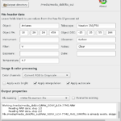
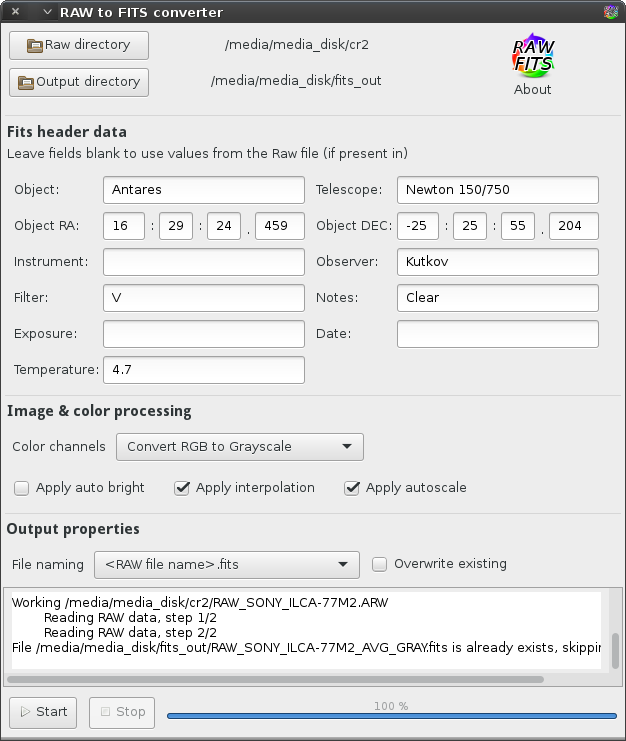

FITS is an open standard defining a digital file format useful for storing, transmitting, and processing scientific and other images. FITS is the most commonly used digital file format in astronomy. Unlike many image formats, FITS is designed specifically for scientific data and hence includes many provisions for describing photometric and spatial calibration information, together with image origin metadata. (Wikipedia (c)).
Most of the astronomical software and hardware produces and working only with FITS files.
But there are many astrophotographers and amateurs astronomers (actually, not all are real amateurs 🙂 ) who use only modern DSLR cameras and shooting in RAW format.
Modern DSLR cameras can be used for serious science, like searching for variable stars or astrometry of some objects. But the only way to do that – convert RAW files to the FITS format for future processing in astronomical software.
I wrote a little program that solves this problem and allows easily convert files in a batch mode.
In this article, I want to describe in detail how it works.
Please jump to this article if you need technical details about the libraw: Part 2: working with LIBRAW.
The program is written in pure C with GTK 3 user interface.
All external dependencies are only LibRaw (the latest stable versions from the official site are preferable to versions in distros) and cfitsio.
LibRaw is used to read images and metadata from the RAW files and support many camera vendors and models.
Cfits is a popular C library for working FITS files.
Source code is available here: Github Raw2Fits
It is mainly designed for Linux, but I believe it can be compiled and successfully run on OS X and even Windows OS. All question is in build procedure and dependencies resolution.
The program is under active development and improvements, so some of the article’s points may be deprecated, sorry.
Here is the user interface.

Very simple.
All you need is just set input and output directories, fill up some text fields, and press “Start” button.
All entered data will be written into FITS headers according to the FITS file standard.
All conversions are doing in background threads. The number of these threads depends on the count of your CPU or cores.
User interface
It is made using Glade designed. It’s simple and intuitive (mostly 🙂 ) Here is how it looks in the designer.
Click on the image to see full resolution.
{kind=link}
If you want to learn about UI development with Glade, start with these articles.
This is a good start point.
Here I will say only that Glade doesn’t produce any code. Only one generated output is a custom XML file with a description of all your windows and UI components.
This file is loading dynamically in your program with GTK function gtk_builder_add_from_file ()
Rapid example.
#include <stdio.h>
#include <gtk/gtk.h>
int main(int argc, char *argv[])
{
GError *err = NULL;
GtkWidget *window;
GtkBuilder *builder;
gtk_init(&argc, &argv);
builder = gtk_builder_new();
if (!gtk_builder_add_from_file (builder, "ui.glade", &err)) {
perror(err->message);
g_object_unref(builder);
return -1;
}
window = GTK_WIDGET(gtk_builder_get_object(builder, "windowname"));
gtk_widget_show(window);
gtk_main();
g_object_unref(builder);
return 0;
}
In this example, you got a GtkBuilder object with all UI schema loaded using gtk_builder_add_from_file ()
You can get any element from this schema by its name using gtk_builder_get_object (), for example, some widget named “windowname“.
Please check out file src/main.c in my source tree to discover how I am loading and accessing different types of components – buttons, text inputs, and so on.
Another interesting note about GTK UI is that only one (main) thread can update UI.
In my case, I have multiple threads that are reporting about conversion progress and printing some messages that should be shown somewhere in UI.
But how to do UI updates from these background threads without ruining GTK runtime?
A good solution is to use GTK idle source with attached callbacks.
Conception is straightforward.
Somewhere in your threaded function, it would be best if you created GSource object using g_idle_source_new () with functiong_source_set_callback(gsource, functionname, arg, NULL) you can create a callback to the function functioname with your custom argument arg.
Then call g_source_attach(gsource, context), where context is a global GMainContext object that you need to initialize somewhere in your main thread with g_main_context_default()
After that, your <strong>functionname (with argument arg) will be called in the main thread.
This function may implement some UI updates, and arg might be some data that should be displayed.
GMainContext *main_context;
/* this function is "called" by my_threaded_function but really executed in the main thread */
static gboolean main_thread_func(void *arg)
{
// do_some_ui_stuff_with_arg(arg)
return G_SOURCE_REMOVE; // don't forget to return this value!
}
/* this function is executed in another thread */
void my_threaded_function(void *data)
{
GSource *source = g_idle_source_new();
g_source_set_callback(source, main_thread_func, arg, NULL);
g_source_attach(source, main_context);
g_source_unref(source);
}
int main()
{
...
main_context = g_main_context_default();
}
Please check out logger_msg_preformat() or progress_update() in src/main.c to see how it works.
It will be continued…
1 thought on “Converting DSLR RAW images into scientific FITS format. Part 1: UI”